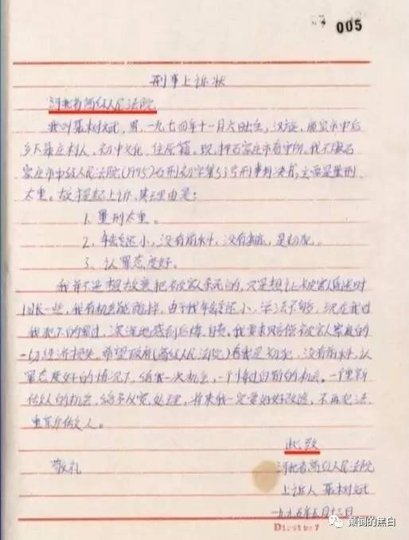
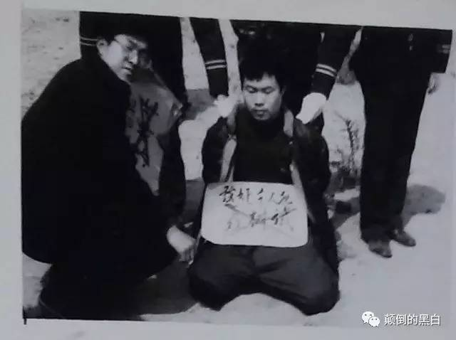

★插播一个通知
前2周优化了博客的【离线浏览】（也就是通过 BT Sync 进行 P2P 同步的那玩意儿）。原先俺采用的方式是：先到博客的管理界面，用“导出/备份”功能，把整个博客导出成 atom 格式的 xml，然后再生成离线浏览的静态页面。由于博客的评论越来越多，使得导出的 xml 文件超大（Blogger 没有提供“只导出博文”的功能，而且导出的 xml 无压缩）。每搞一次都要等很久，而且存在【流量分析的风险】。所以原先俺通常2、3个月才更新一次“博客离线浏览”。
优化后的方式是：直接通过 Blogger 的 API 抓取博文，效率提高很多。如今可以做到：每次有博文发布，俺都立即更新离线浏览。
好几周没有发《每周转载》了。今天这篇是关于“聂树斌冤案”以及“死刑犯器官移植”。
聂树斌案在前2周吸引了很多眼球，不过这几天已经开始被淡忘了（大部分人总是健忘的）。而且之前的墙内媒体报道，很少涉及“死刑犯器官移植”这个雷区。
俺希望通过今天这篇汇总，引发大伙儿对相关问题的关注。
（聂树斌生前照片翻拍）
★聂树斌冤案
维基百科
（编程随想注：以下是《南方周末》连续十多年对此案的跟进报道，不容易啊）
《“聂树斌冤杀案”悬而未决 防“勾兑”公众吁异地调查》2005-03-24
《“真凶”上诉求增其罪 聂树斌案绝处逢生》2007-11-01
《聂树斌案：最高法再审审查正在进行》2007-11-08
《“聂树斌案”翻案渺茫》2009-11-12
《聂树斌案，拖痛两个不幸家庭》2012-02-09
《王书金案再开庭——下一站，最高法？》2013-07-11
《雪藏八年露出冰山一角 聂案卷宗里藏了多少秘密》2013-07-11
《南周十二年追踪——聂树斌终无罪》2016-12-02
★关于死刑犯的器官移植
《欧阳乾：聂树斌的肾 @ 微信公号》
（此文已经被微信管理员和谐了，墙外镜像链接在“这里”。以下是此文摘录）
你以为聂树斌的案子，这样就算尘埃落定了？
错！在这背后还有一些东西，比案子本身还让人细思极恐。
可能有人会问，你他妈有完没完了？
我他妈没完。
聂树斌一案，历时二十年终于平反，群情韬奋，其中一些前因后果的细节也都被一一披露出来，呈现于公众面前，以告慰冤死者在天之灵。但恕我直言，在聂树斌一案中，有一个最重要、最关键、最深刻的问题，却迟迟没有答案。
在此，我为官方反应速度的迟缓感到惋惜。
这个问题就是：网上疯传，当年之所以要快杀聂树斌，是因为他的肾跟某高官配型成功。不知此事是否属实？
就我个人而言，我宁可相信这是一个谣言。
但官方一直没有出来辟谣，我就有些慌了。
我绝对是挣着卖白菜的钱，操着卖白粉的心，急领导之所急。看到网络上有那么多人在讨论这个问题，时不时的还有一些不和谐言论掺杂进来，我就痛心疾首。我认为在这种形式下，最应该做的就是开诚布公，将这个问题的答案公之于众，还我社会主义法制建设一个朗朗乾坤。
真的是刻不容缓啊，没看到聂树斌案件的后续发酵影响力越来越大吗？全都是这事闹得。连我一介草民都坐不住了，有关部门的反应咋还这么慢呢，难道真的是“肉食者鄙，未能远谋”？
......
很多年前看《古惑仔》，印象最深刻的一句台词是“我们出来混的，有错就要认，挨打要立正”。同志们，这可是从古惑仔嘴里说出来的话啊，连TM洪兴都有这样的觉悟，何况我们共产主义接班人！
想想历史吧，晚清够完犊子的了，那慈禧可是拿着北洋水师军费过生日的主儿。可“杨乃武与小白菜”的案子翻供时，光处理二品以上的大员就多达82人！“小白菜”一事案发时是同治十二年，也就是1873年；到案情真相大白时是光绪二年，也就是1876年，历时不过才仅仅三年，就已经被称为“千古奇冤”。而聂树斌一案历时二十年，其过程之曲折，情节之跌宕乃古今司法史上罕见，决不是打个哈哈就能蒙混过去的，“莫须有三字何以服天下！”
众生平等，谁都不比谁的命金贵，哪怕低贱如蝼蚁，我的肾就是我的肾，我愿意捐给你，那是发了菩萨心肠，要是我不想给你用，你一点办法都没有，这是天赋人权。至于说到杀人取肾这种事，若是假的还好，若是真的，真应了鲁迅先生那句“我向来是不惮以最坏的恶意，来推测中国人的，然而我还不料，也不信竟会凶残到这地步。”
《假如特朗普需要一只肾 @ 博谈网》
（编程随想注：此文是拿美国来影射天朝。不妨想象一下：把标题换成《假如习近平需要一只肾》）
《洪晃：受虐者的狂欢 @ 南都周刊》
（以下是此文摘录）
如果我们要谈器官移植，那我们必须谈一下中国刑法下死囚的权利。哪怕这个死囚不是错案，是一个血债累累的杀人犯，那这个犯人有权利吗？死囚的器官使用有规定吗？需要家属同意吗？还是毙了就可以器官随便用？死囚对自己的器官如果没有任何权益，那又有哪些法律条款能够保证中国的死牢不是器官移植的提取库？
质疑器官移植的病人是愚蠢的，因为我相信中国不可能只有一个章含之作了器官移植。质疑医生也是愚蠢的，中国只有280万名医生，除了已经被病人家属在走廊里杀死杀伤的之外，我们真的还要质疑这些中国健康最稀有的资源吗？那我们质疑谁？
去追寻聂树斌的肾移植到谁的身上没有意义，去追究聂树斌错案的原因来完善中国的司法制度则是有意义的，是唯一能防治更多冤案的措施。如果聂树斌的器官真的被移植采用，那么其他犯人呢 ？固然聂可能是冤案，那如果不是冤案的死囚的器官被任意采用呢？我们要不要保护死囚的人权以及他们的器官？
陈光武律师：
我曾办的一案件，被告人是年轻女性，我要通知家人准备收尸，法院说会通知的。
结果死刑执行一个多月，家人找我问什么时执行，准备收尸。
我到法院问了，法院说联系不到家人，尸体交卫校做实验解剖用了。
那个时代，法院都那么说。甚至被告人自己主动捐肾换点钱来救济家人都不许。因为已经名花有主了……
Red Fire Age：
天天犯罪，已经习以为常麻木不仁了！
★对聂案的质疑
《“聂树斌死亡时间”与“章含之换肾时间”考 @ 人过五十网》
1、
先说章含之的换肾时间。
1.1
第一财经日报社社长助理叶航于2008年1月26日在新浪博客中写了篇纪念刚去世的章含之的文章《哀伤的雪——悼章含之》，文中写道：
章老师很相信本命年说法的，就是最后一次我去看她的那天（注：前文写明是2007年11月底）她说：“本命年是有些晦气，我的每一个本命年都有些麻烦事儿，上一个本命年是我大手术，再前一个本命年是老乔去世，这个本命年我又这么不好，哎！”
章含之生于1935年7月14日，属猪。说这话的2007年正好是她本命年。章所说做大手术的“上一个本命年”应该是1995年，她正好60岁，农历的时间为1995年1月31日-1996年2月18日。也就是说章在这个期间做了大手术。
1.2
2015年1月1日，《南都周刊》第838期刊载了章含之女儿洪晃的专栏文章，题为《受虐者的狂欢》，讲的就是社会上风传她妈用了聂树斌的肾，洪晃否认了这个说法。文章中洪晃是这么说的：
“我母亲的确换过两次肾，她是1995年得肾炎，透析一年多以后换肾。第一次换肾是在北京朝阳医院，第二次是7年以后在上海长征医院。两个医院没有透露肾源。”
“因为我妈妈是1996年换肾，我可以非常肯定地回答，我妈妈换肾所采用的器官与1995年被执行死刑的聂树斌无关。”
由于叶航与章含之有多年的交情，关系很近，又是亲耳听章含之说的；洪晃则是章的女儿，因此，我们可以认为这两人说的比较可靠。
那对比叶航文与洪晃文，两个时间的交集是1996年1月1日-1996年2月18日。也就是说，章含之是在这49天中的某一天首次做了换肾手术。
此前有许多文章认为章含之用了聂树斌的肾是谣言，因为时间对不上。
公开文件显示，聂树斌是在1995年4月27日被执行枪决。按医学常识，换肾手术必须在供体死后48小时内进行。既然章含之的换肾手术是在1996年1月或2月做的，那时间显然对不上。洪晃很肯定地说不可能，也是因为这个原因。
2、
【但是】，聂树斌案的复查移交山东高院后，聂树斌的辩护律师李树亭几经周折，终于在2015年4月看到了聂案的全部案卷。从案卷中，李律师除了发现大量与定罪及程序有关的疑点外，在聂树斌到底是何时死的，也提出了质疑。重要的证据有：
2.1 聂树斌“死后”又离奇上诉
案卷显示，聂树斌是1995年4月27日被枪决的。但案卷中却有一份落款时间为“一九九五年五月十三日”，由聂树斌亲笔书写并签名的“刑事上诉状”。在复查听证会上，李律师出示了这份上诉状，法庭认定这是聂树斌亲笔书写，这意味着：法庭承认聂树斌被执行死刑的时间存在重大误差。

2.2 死刑现场照片显示，枪决聂树斌应该是在下雪的冬天
李律师在接受凤凰卫视采访时表示，从案卷中的执行照片看，聂树斌是身穿羽绒服跪在雪地上，雪比较厚。而旁边的执行人员也穿着厚厚的冬装，聂不可能是在1995年4月27日被枪决的。

李树亭律师为此专门到石家庄气象局查阅气象资料，1995年4月27日是25.8度，天很温暖，不可能下雪或穿羽绒服。
李律师进一步查阅了前后一年多的气象资料，发现那段时间中，石家庄只下了三场雪，其中1996年1月13日、14日下了两场比较大的雪，其后又下过一场很小的雪。从执行现场照片上的积雪厚度来判断，聂枪决的时间应该是1月13、14日那两场大雪之后！
（李树亭律师接受凤凰卫视采访视频——法院承认聂树斌被执行死刑时间存在重大误差 @ 凤凰网）
期间李律师还找到另一证人，他表示聂树斌可能是在1995年10月1日左右被执行死刑，反正不是4月27日。
李律师查阅案卷还发现，指挥这次死刑执行的审判员为空白。临场监督人员的检查人员也为空白。也就是说，这次执行既没有执行报告，也没有临场监督报告，这完全违反了刑事诉讼法的规定。
3、
如果这些死刑执行照片不是伪造的，再配合石家庄市1995年4月至1996年4月间的气象资料，那么，不用太高深专业的水平，我们都能判断，聂树斌被枪决的时间，应该是在1996年1月13日后的几天，因为照片显示，执行死刑时地上的雪刚开始有点融化。
现在我们再来对比聂树斌的死亡时间与章含之的换肾时间：
章含之首次换肾时间：1996年1月1日-1996年2月18日之间；
聂树斌真实死亡时间：1996年1月13日后的几天。
加上那些无风不起浪的传言，加上聂树斌死亡时间那么诡异，你会得出什么结论？
还有另外一个诡异的细节是，按官方的说法，人是4月27日枪毙的，但枪决前却没有通知家属。4月28日聂树斌的父亲还去看守所给儿子送生活用品，到了看守所才知道人已经枪毙了。
聂树斌的母亲张焕枝在接受凤凰卫视采访时说，那时她儿子可能还没死，但他们为什么说人已经枪毙了呢？还把骨灰都拿来了，他们是什么目的呢？
如果聂树斌确实是1996年1月才枪毙的，那案卷里写的却是1995年4月27日执行死刑，又不告诉家属，家属找上门来才说人死了，还把骨灰都拿出来了，那当地公检法和政府演的又是哪一出呢？反正是判了死刑要枪毙，为什么要这么做呢？这其中的猫腻真是让人有太多的想象空间。
博讯新闻网：
#聂树斌 被枪决的时间，应在1996年1月13日后的几天，因为照片显示，执行死刑时地上的雪刚开始有点融化；
#章含之 首次换肾时间：1996年1月1日-1996年2月18日之间；
聂树斌真实死亡时间：1996年1月13日后的几天。
http://www.boxun.com/news/gb/china/2016/12/201612101314.shtml …
高瑜：
在法律已认定的错杀冤杀案件中，聂树斌案仍旧飞溅着血光.
最高院“（2016）最高法刑再3号”的判决，依然认定聂“1995年4月27日被执行死刑。”
2014年最高院指令山东高院对聂案进行复查，执行死刑日期是此案四大疑点之一。
辩护律师李树亭质疑该次指挥执行死刑的审判员为空白
av69：
【不关注这样的个案，每个人都可能成为器官移植的配件】
高院出聂于1995年4月25日枪毙但照片上聂和执行死刑的刽子手都穿大棉衣在雪地里（那天气温25度）。
后发现聂的申诉书落款日期是5月13日，河北1996年1月18日才下雪，而章含之是1996年1月18日做的肾移植手术
水流沙坝1：
中新网：“原办案的法院代表称执行日期确为4月27日，执行现场为沙地，工作人员穿的是春秋装而非冬装。”
可是，聂树斌被执行死刑日1995年4月27日石家庄25℃天气，行刑照为何跪在雪地被枪决？
指雪为沙，还是指沙为雪？
李子园里：
聂后面的那棵小树一个树叶也没有，明明是冬天或早春，绝不是温暖的四月天。
★关于天朝的司法制度
《聂树斌案背后的中国司法困境 @ 纽约时报》
《斯伟江：沉疴依然在 几度夕阳红 @ 微信公号》
（以下是此文摘录，文中的超链接是俺加注的）
刑事制度，号称小宪法，事关每一个人。官员可以被腐败之名，百姓可以被寻衅滋事。甚至不问世事的平民，只要有凶杀案发生，就会被屈打成招。网上有一个段子，说，如果白银系列凶杀案的凶杀没有留下血迹、指纹，这个案子就早破了。这确实是冷得发抖的笑话，一般人看不懂。
在白银系列凶杀案报道中，（被害人）“小白鞋”的男朋友被关押了三天三夜。好在血型和指纹在，否则，案子就这样破了。
安徽蚌埠20年前的区长助理于英生杀妻冤案平反，真正的强奸杀人犯——当地交警武某某随之落网。
2013年8月13日，安徽省高院再审以犯罪证据“不具有唯一性和排他性”，宣判已服刑近17年的“杀妻案犯”于英生无罪，警方随即启动再侦程序。警方称，专案组克服多种困难，从嫌犯遗留痕迹物证中检测出DNA样本独特信息，经排查锁定嫌犯。于英生也宣称被刑讯逼供。
我在吉林办的王柏玉案，就是一模一样。可惜，凶手没有留下指纹、血迹。这样，死者的同居四年的男友，就被怀疑是凶杀，被关押38天后，被各种刑讯逼供（有同监室的人的多份证言），最后屈打成招，疑罪从轻，判了死缓，已经关押14年，还要坐13年。但他一天都没有认过罪，申诉不止，直到今天。
最近一个上海的案子，男友突然失踪了，房间里有一些血迹（死者血迹），同居女友就被关押了。没有书面手续。
好在很快破案了，同居女友的前男友承认了。这案子，要是吉林的做法，谁知道结果如何？
谁也无法避免被怀疑。但一个好的刑事制度，应该是尽量避免使用暴力、威胁、株连等手段，以公正的手段，去寻找一个公正的结果。河道未改，水性凶猛。聂树斌案子，似乎只是无尽的江湖中，冥冥中溅起的一朵浪花，依然会消逝在滚滚浑浊的江河中。
《熊培云：哪是什么迟到的正义，停止羞辱而已 @ 墙外楼》
《许氏冤案生产线 @ 明镜网》
《丁咚：从聂树斌到雷洋，中国怎么了？ @ 中国选举与治理》
《领导不倒台，你翻得了案吗？哪有迟来的正义，这是一记响亮的耳光！ @ 西祠胡同》
（以下是此文摘录，粗体是俺标注的）
1994年9月，一位女工被强奸致死，聂树斌被抓。1995年4月判决死刑，聂树斌被执行死刑。
聂树斌死后十年，2005年，网上通缉逃犯王书金被抓，供述自己是“聂树斌案”的真凶，供述的细节与奸杀案情非常符合。
按说真凶落网，聂树斌应该是冤死的了。但我告诉你什么叫峰回路转，连脑洞最大的编剧都不敢这么写！2013年9月27日，河北省高院裁定，王书金非聂树斌案真凶。也就是说，河北高院认为，强奸杀人的还是聂树斌！！
看不懂了吧，别急，后面还有——
2014年底，最高人民法院指令山东高院复查聂树斌案。2015年6月、9月和12月，聂树斌案复查期限先后延期三个月，仍然扑朔迷离，迷雾重重。
这才是真的看不懂！在证据确凿、人证物证俱在的情况下，就是不给你翻案！二十年里，聂树斌的父母四处奔走，为孩子伸冤，他们盲目地找法院、检察院，得到的是白眼和冷遇，连儿子的死刑判决书都拿不到；直到后来真凶“王书金”的意外出现，才让他们重新燃起希望，然后又是十年漫长的等待……
这种绝望，你们感受下。
直到今天，聂树斌案彻底沉冤昭雪了，我们才得以知道其中的一些内幕，尤其是河北政法委书记张越被调查后，媒体爆出了他的一些“工作”细节。其中一个重点，就是他在聂树斌平反的巨大阻力中，所起的可怕作用。
也就是说，河北政法委书记张越，这个人称“河北王”的家伙，以一己之力，掌控了整个司法系统，甚至震伏山东高院，生生把一起人命关天的案件压了这么多年。
这能量……
要不是这货下台了,我还以为他是上帝呢！
......
相信读到这里，你们的心情跟我一样的沉重了。
因为你们肯定都想到了另外一种可能性：如果领导不倒台，聂树斌的案子能翻的了吗？
所以说，聂树斌的案子什么都代表不了，它只是一个偶然、一个概率极其细微渺茫的小概率事件，就跟你买双色球中了五百万差不多。
所以，当读到这则新闻的时候，我的第一反应不是庆幸，而是后怕。历史那么巧，给了聂树斌一个面子：在他蒙冤的十年后，真凶王书金落网了；又在真凶落网的十年后，河北王张越倒台了。如果历史再重来一遍的话，谁还敢保证能有这样的巧合？
......
最后，我要说一下聂树斌案的真凶王书金。诚然，这家伙是一个十恶不赦的罪犯，但在最后关头，他的表现是个真爷们。
在2013年二审期间，河北政法委的一个工作组非法接入案件核查，将王书金非法外提，劝王书金“别蹚聂树斌案的浑水”，如果照办会给王书金的家人和孩子办低保。在遭到王书金的拒绝后，工作组人员进行了刑讯逼供，“在卫生间用木板抽打王书金的脚心，照死里打，在讯问室的铁椅子上让王书金坐了半个月之久”。而这些，都没有让王书金屈服——十一年来，他始终坚称自己就是真凶。以至于在2013年6月王书金案二审第二次开庭的时候，出现了中国司法史乃至世界司法史上都绝无仅有的一幕：检方力证聂树斌案非王书金所为，而王书金的辩护方则力证王书金就是真凶。
看到这里，我觉得中国的编剧们都弱爆了。
聂树斌活了二十一岁，从他执行死刑到平反，也正好过去了二十一年，这不是什么迟到的正义，这是一记沉重的耳光。最后的最后，再说一句题外话：最高法院改判已被枪决的聂树斌无罪。对于这个结果，聂母只说了两个字：满意。而聂父正在奔跑着感谢国家。
★关于“冤假错案”及“幕后黑手”
聂案律师陈光武：
今天我一再和媒体说，聂案的昭雪，既不是正能量的胜利，也不是迟到的正义，更不是法制的进步。完全是全社会无数百姓、专家学者、律师们不懈努力的结果。
这在中国是第一次，也是最后一次。随着网络管制愈加严苛，律师发言将受处罚，无数类似冤案只能冤沉海底。
茅于轼：
被害人又活着回来了；杀人凶手被处死后真凶又露面了。这种非常稀罕的事情已经发生多起。
如果说这类事件的概率为1%，那么冤杀的人至少是几百人。
我国迫切需要对死刑的使用深刻反思：
首先对非暴力案件的死刑要非常慎重；
其次对社会上有巨大争议的案件要避免死刑；
最终要废除死刑。
李庄：
不改变以审讯笔录（刑讯口供）定案的恶习，之前的冤假错案难以平反，此后也将很难以杜绝。
重庆“黑打”期间，警察熊峰对我说过印象最深的一句话：你不签字没关系，我们没有做不成的笔录，最后注明你拒绝签字！
秀才江湖：
陈满、钱仁凤、呼吉格勒图、聂树斌、念斌------
所有昭雪的冤案，制造冤案的公检法人员全都逍遥法外、依然升官发财，这就是冤案层出不穷的根本原因：制造冤案没有违法的成本，不会付出作恶的代价，成功了可以升官发财，东窗事发依然逍遥法外、毫发未伤，有百利而无一害，这帮王八蛋有何惧哉！
av69：
聂树斌：人不是我杀的。
河北法院：人是你杀的，判处死刑。
王书金：人是我杀的。
河北法院：人不是你杀的。
王书金：我要上诉，人是我杀的。
河北法院：人不是你杀的，真凶是聂树斌，驳回上诉。
——有一种法律，叫“中国法律”！！！
gzcaves：
这是一张足以载入历史的照片：
左，呼格吉勒图的母亲尚爱云；
右，聂树斌的母亲张焕枝。
前边二位是冤案的母亲，背景是这个民族多灾多难的原因……
高瑜：
最高院对聂树斌案迟到21年的重申结论继续发酵。
2014年聂树斌的辩护律师杨金柱因为河北高院院长卫彦明两会“创造了中国高院院长的法盲言论之最”，要求卫辞职的信件，迟到两年公开发表。
另外《许氏冤案生产线》的网文在网上引发轰动，直把聂树斌被冤杀的责任指向退休安全部部长许永跃
老肖©：
【党媒喊追责聂树斌案 前国安部长要失眠了】
备受关注的聂树斌案日前最终改判聂树斌无罪，随后党媒发文呼吁追责聂树斌案背后的黑手。
早前媒体报导，首个应该被追责的就是时任河北省委副书记、后任中共国家安全部部长的许永跃。
王思想：
【中国政法大学洪道德教授三大发明】
1，兰考收养上百弃婴的袁厉害应该被判刑3-7年；
2，厦大博导吴春明诱奸女生，不算犯罪。
3，聂树斌案证据充分，不是冤案。
拈花时评：
敦促@河北高院 院长卫彦明道歉辞职！身为河北高院院长的卫彦明，当年曾在全国人代会上公开说，如果确认不是王书金作案，聂树斌案就没有复查的必要。
现在聂树斌案已经被@最高人民法院 改判无罪，卫彦明难道不应该为当初的错误言论公开道歉并立即辞职吗？
tinyfool：
因为高层异动，聂的事情才有了个着落，其实，没啥可喜的。
这就是标准人治，问题是坏人常有，贪官不绝，每次都要等死一个贪官，等一个贪官落马，才能纠正，这不是喜讯，这是最悲哀的事情吧。
王思想：
聂树斌，你在九泉之下，一定要记住这6个可耻的名字：康平平、梁建琴、张贵军、赵桂云、王振平、姜枫。
有冤报冤，索命赔偿。
許梅邨：
中国冤案有个本质规律：“都是领导重视”。
对破案或审批有要求的案件，只要是政治运动焦点、只要是领导对案件有批示或指示，办案人员就敢铤而走险，假案办成“铁案”。
今年六月，中办竟然发文，如果组织认定不是故意的错案，不追究。这是一种可怕的“鼓励”。
北风（温云超, Yunchao Wen）：
陈年老酒：聂树斌案在整个司法机关造成的冤案中只是冰山一角，司法的腐败、渎职、按长官意志而草菅人命是中国司法的基本形态。
一个聂案的平反远远不足以证明法治的公正和进步，如果此案有那么一点意义，意义只在于对中国司法的黑暗提供了一个活生生的案例。
zxgthy：
司法在犯罪，罪犯在司法！这就是中国
★伸张正义的人们
《赵良美：聂树斌案和推动它的人们 @ 微信公号》
《公安副局长披露聂树斌案另有真凶，丢官 @ 新浪》
高瑜：
【营救聂树斌的警察郑月成陷于贫病交困】
2009年郑成月最早披露“一案两凶”被要求提前离岗，后因经济纠纷被磁县法院伪造签字，冻结了郑夫妇的工资以及家庭财产。
老岳父躺在家里，他自己身患严重的糖尿病和肾病，却无法入院看病；妻子多次喝药自杀；儿子研究生毕业公务员考试笔试第一却不被录用。
高瑜：
微信群已经联系上郑成月。
另外律师文摘孙国栋转告：宁波贸易全球通用有限公司老总陈建旭愿意资助郑月成先生医疗费用。
av69：
在聂树斌被沉冤昭雪之际，作为聂案的律师李金星却被济南司法局以影响法庭秩序为名，被停止执业一年。
能翻案说明我们往前走了，但距离法治还很远。
——孙富贵
杨学林律师：
今天，有两份法律文书要载入史册。
一是最高法院宣告聂树斌无罪的判决书，还有就是这份济南司法局的告知书。
李金星(伍雷)，这位为聂树斌平反付出艰苦工作的中国律师，被给予停止执业一年的处罚。奇葩啊，奇葩！举世之奇葩！
★真理部忽悠“迟到的正义”
（编程随想注：很多网友对“迟到的正义”这种说法进行讽刺）
中国数字时代：
《耶鲁大学名言手册》编辑 Fred Shapiro 曾在2010年对著名法谚“Justice delayed is justice denied.”（迟到的正义不是正义）的来源进行了详细考证（链接）。这句法谚的原型最早可追溯到1661年，英国法律学者 John Godolphin 曾在一本法律著作的自序中写道：“To deny or delay Justice is Injustice.”（否认或推迟正义就是不正义）
老肖©：
河南赵作海案平反，你们说是迟到的正义；
浙江叔侄案平反，你们说是迟到的正义；
湖北佘祥林杀妻案平反，你们还说是迟到的正义；
安徽于英生案、内蒙古王本余案、福建念斌案、广东徐辉强奸杀人案、内蒙古呼格吉勒图案…
你们都说是迟到的正义，真好奇你国的正义怎么老迟到？
变态辣椒：
秀才江湖：
一有冤案昭雪，官方媒体就得瑟，就说“正义也许会迟到，但决不会缺席。”在人治社会，有个狗屁正义！太原恶警打死周秀云还踩着她的头发，才判五年，正义在哪里？薄谷开来又杀人又贪污，居然免死，正义在哪里？贾敬龙婚房被强拆，愤而杀死村官，虽然无数人呼吁“刀下留下”，而是被枪决，正义在哪里？
YY是没心的饼干：
最烦报道说”迟来的正义”，exo me？？迟到的还叫正义？你国正义真廉价哦嘻嘻嘻。
一句无罪就没噜，不要脸谁不会呀。当年草率结案的不该一个个抓起来追究责任么，到时候说正义也不迟吧。
我想说错了就是错了，在那儿大义凛然真的让我觉得比吃了一只死苍蝇还恶心。妈卖批。[微笑]
阿极就这样唧唧歪歪滴：
有脸说正义？整天一句正义迟到，尼玛迟到的叫什么正义？一条人命没了，几次三番阻挠翻案都得逞了，现在腆着脸讲正义？
只想说一句，不要搞得将来这个国度，不是鱼死就是网破。很多问题，深层原因该解决了，爱国才这么说的。
风过无痕-科：
05年真凶王书金就已承认当年的聂树斌案是他犯下的，为何等了11年才等来改判无罪？
这十年间究竟是什么人和事阻饶案件的进展？该不该给公众一个说法？给蒙冤的聂树斌一个交代，给聂家人一个解释和道歉！
斯布_Huan：
不是迟到21年，而是冤假错案21年，请注意重点好吗
SamFire2016：
聂案“正义”没有来，你们已经奸污过“法律”了，请不要侮辱“正义”了好吧，以后报道请不要用正义这词了，谢了
青岛的老头：
首先无论再严谨的工作都有失误。。。
然：根本没有证据就把人搞死绝不是所谓的有罪推定。
闯_Eros：
别在冤案里提正义 听了恶心 正义不过就是某些人的一句话而已
生命下说什么鸡汤正义 性命攸关还组织语言来文绉绉 装什么大尾巴狼 一群拿着最高法胡作非为死爹妈的东西[吐][吐][吐][微笑]
灵魂-堕落红尘：
一颗脑袋落地，能不能接起来还用历史来证明？你是脑残吗
皮蛋炒鸡丁：
一条人命无辜丧生，就翻个案就正义了？我国正义还真是廉价呢
小小娃小小斌：
人死不能复生，家人这些年来的痛苦也是你们想象不到的。你以为像你动动纸笔键盘敲几个字这么容易吗？
为什么这么多人喷你，因为始作俑者没有被处罚！！！迟来的正义非正义！！！处罚连迟来都没有好吗？还以为老百姓像以前那么好骗吗？呵呵…
Yi_袭人：
[二哈] 当年办案的人退休了怎么办？？？
壹千lemon：
正义就是坟头烧纸啊
广陵素生：
所以现在还得歌功颂德喽！
小星老师：
迟到这么久，瞬间觉得咱们国家的法律只有对有权有势的人管用；对老百姓来说，法律面前，没有公平可言.
连投四个坏球：
学校早上八点上课，结果我每天晚上五点半才到学校，跟老师说我虽然会迟到但从不会缺席[哈哈]
老师当众表扬了我，称之为迟来的勤奋，努力宣扬我的事迹，同学们也响起了热烈的掌声，我感到这个学校正在向着公平正义平等法治的方向越变越好[哈哈]
花村内火気厳禁：
小编 友情提示 你忘记关掉评论了[微笑]
★所谓“感谢国家”
王思想：
转：关于聂树斌案沉冤昭雪，所有的赞美和祝贺都是可耻的。
对于一个已经死去的人来说，正义是永远没有到来的。
王爱忠：
今天的最高院和前些天诛杀贾敬龙的最高院并没有什么不一样，还是这个专政国家机器的一部分，其司法本质是侵犯人的自由，践踏人的权利。
只要这一点没有改变，任何对这样的一个暴政工具的赞美都是不合适的。
一尘半梦：
是不是又要感谢政府了？！
★古今对比
王思想：
【聂树斌前传】
明朝嘉靖年间。山西一珠宝商被人全家灭门。一仆人屈打成招并被问斩。
随后案情突变，经查真凶实为一流窜盗贼，并起获大量赃物。
刑部特意挂牌督办此案。
真凶被凌迟。制造冤案者，包括县令在内6人问斩，4人绞刑，7人判流刑发配1000里。
水流沙坝1：
【乱世】
1873年，杨乃武案案发，严刑逼供下屈打成招的杨乃武被判死刑。
1874年，杨乃武胞姐杨淑英不服判决，进京向督察院上诉，杨乃武死刑得以暂缓。
1876年，刑部重审杨乃武案，杨乃武冤情得雪，无罪释放。
1914年，杨乃武病逝，享年73岁。
杨乃武冤案全程历时4年，“两湖”上下三十余名官员遭革职查办、永不录用。
【盛世】
1994年，聂树斌案案发，逼供下聂树斌被判死刑。
1995年3月，聂家不服判决，向河北高级“人民”法院上诉。
1995年4月25日，河北高级“人民”法院维持死刑判决。
1995年4月27日，21岁的聂树斌被执行枪决。……
2016年12月，聂树斌案翻案，已冤死21年的聂树斌被判无罪。
聂树斌案全程历时22年，无一官员为此案负责。
---------------------------------
纵向一比，比出一百多年这个国家究竟是进步还是倒退来。
★网友的其它评论
旁观的鱼：
【央视你怎么总和罪犯站在一起？】
海阔天空：
鲁迅在《娜拉走后怎样》中曾说过：
“可惜中国太难改变了，即使搬动一张桌子，改装一个火炉，几乎也要血；而且即使有了血，也未必一定能搬动，能改装……”
Wendy：
中国历史上，没有一个皇帝敢把自己的思想强行灌输给全国人民，只是借儒释道加强思想统治。
翻遍史书，也找不到“嬴政思想、刘邦思想、杨广思想、李世民思想、赵匡胤思想、成吉思汗思想、朱元璋思想、爱新觉罗思想”等词汇。
而49年后我们看到了：毛思想、邓理论、江代表、胡发展，习做梦 ...
王思想：
老师：中国共产党为什么总能保持先进性？
小明：全班只有我一个学生的话，你别问我为什么总考第一名。
小明又不出意料的滚了出去
Jian Alan Huang：
“六如精神”是指：
习主席遇人民如临大敌；
习主席幸主播如狼似虎；
习主席抓经济如履薄冰；
习主席上外网如坐针毡；
习主席看时局如丧考妣；
习主席赴煤山如梦初醒。
俺博客上，和本文相关的帖子（需翻墙）：
《分析“制度性腐败”——为啥天朝的贪官屡禁不止？》
《如何理解“英美法系”（普通法系）——从“英国古代史”聊到“香港国安法”》
《政治常识扫盲：澄清【言论自由】的各种误区》
《被判“谋反罪”的都是哪些人——“危害国家安全罪”出笼20年随想》
《每周转载：超级富豪王振华性侵9岁女童（大量网友评论，多图）》
《每周转载：华为李洪元案——工作996、离职251、维权404（大量网友评论，多图）》
《每周转载：雷洋案第2季——北京检方“不起诉”引发轩然大波》
《每周转载：雷洋案第1季——人大校友离奇死亡引大量网友围观》
《每周转载：关于“浦志强庭审”的各方报道和网友评论》
《每周转载：710事件——全国性维权律师大抓捕（外媒报道及网友评论）》
《每周转载：辽宁交警执法，司机死在派出所，地方衙门称其“身体发生异样”》
《每周转载：大量网友围观庆安命案，并质疑 CCAV 视频（多图）》
《每周转载：网民围观长沙警方，区伯收到艳照要挟》
《每周转载：关于区伯“被嫖娼”事件的相关报道和网友评论》
《每周转载：网友热议“寻衅滋事”和“泄漏国家机密”的罪名》
《每周转载：汇总未成年人被性侵被嫖宿的案件（38起，附图）》
《每周转载：关于“马三家”和劳教制度（网文若干、图片若干）》
版权声明
本博客所有的原创文章，作者皆保留版权。转载必须包含本声明，保持本文完整，并以超链接形式注明作者编程随想和本文原始地址：
https://program-think.blogspot.com/2016/12/weekly-share-105.html
本博客所有的原创文章，作者皆保留版权。转载必须包含本声明，保持本文完整，并以超链接形式注明作者编程随想和本文原始地址：
https://program-think.blogspot.com/2016/12/weekly-share-105.html